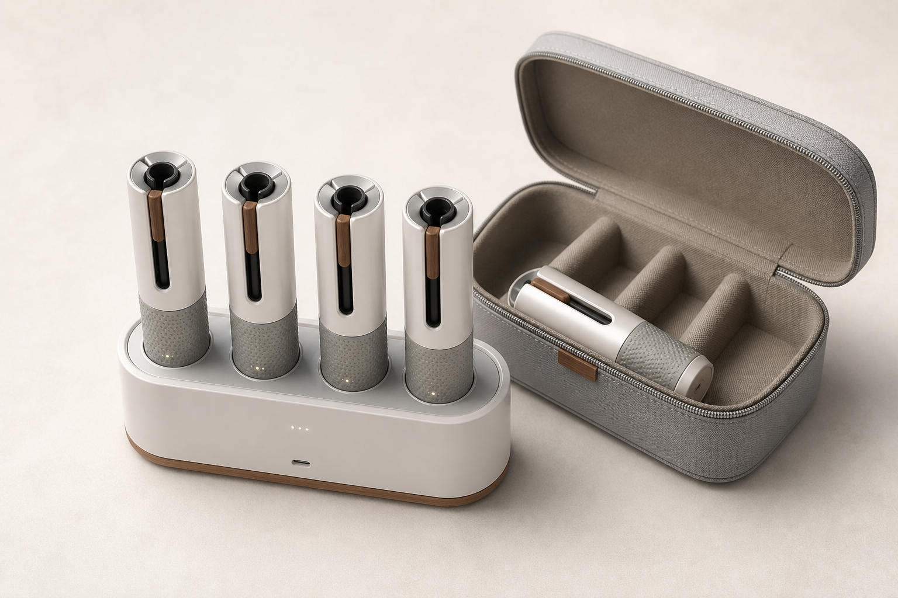
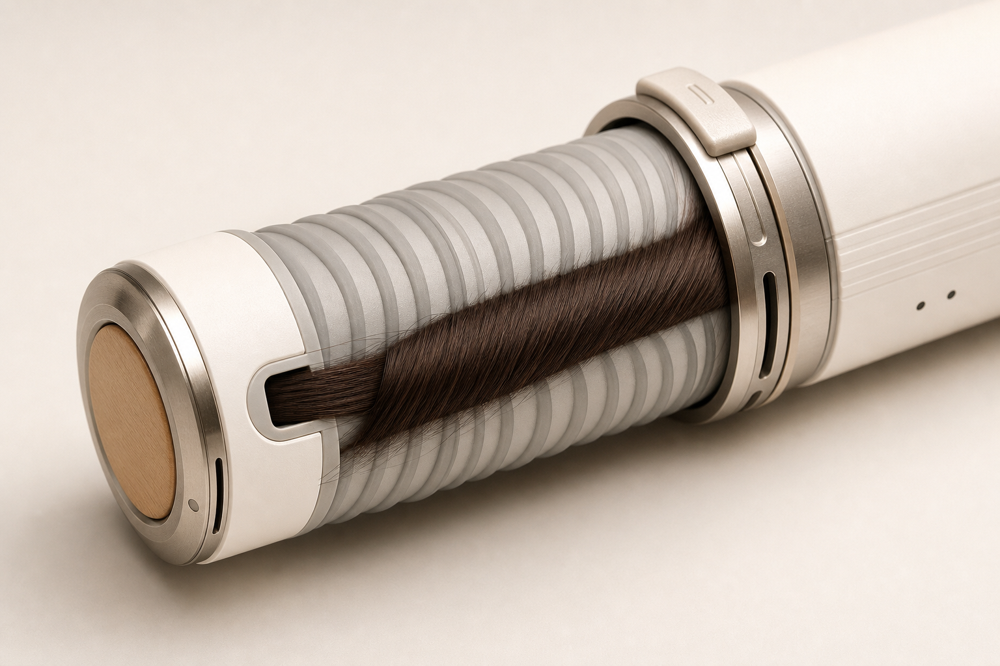

市場・ターゲット
空白市場の主張を、出典付きの競合表と小さな検証単位に置き換える。
国内価格帯の再調査
コテ常用層とホットカーラー離脱層の仮説分離
購買理由を「ダメージ」だけに依存させない
HEJ Haircolor Lab / Cold-wrap Smart Curler / v2 prototype
「熱いカーラーを巻く」体験を再設計するための、外部提案前プロトタイプ。 v1の弱点だった根拠不足・実現性・競合比較・画像化を分解し、検証可能なタスクに落とし込む。
空白市場の主張を、出典付きの競合表と小さな検証単位に置き換える。
60秒加熱、4本同時制御、電池、温度ムラ、物理操作を成立条件として洗い出す。
OEMに聞かれるMOQ、原価レンジ、初回ロット、販売価格の粗利構造を仮置きする。
製品単体、使用シーン、アプリ連動の3カットを先に作り、提案の理解速度を上げる。
従来ホットカーラーの不安は、カール性能以前に「熱いものを髪に巻く怖さ」。本製品は装着時の心理障壁を下げる。
前髪・トップ・サイドで必要な温度を変え、毎朝の失敗を減らす。ただしアプリ依存は避け、物理スタートを併用する。
ステンレス、白磁、ウォームウッド調を基本に、洗面台やサロン受付に置けるプロダクト感を作る。
外周に柔らかい微細リブ、シリコン帯、浅いスパイラル溝を入れる。髪を傷めず、ほどく時に引っかからない摩擦係数が必要。
大きなクリップではなく、毛先を差し込む短いスリットや薄い押さえリングで初動だけ固定する。見た目の古さを避ける。
細毛、太毛、レイヤー、前髪、湿度差で保持力を検証する。机上スペックでは判断できないため、モック試作の最初の検証項目にする。
| カテゴリ | 代表例 | 現時点で確認できる特徴 | HEJが取るべき差別化 |
|---|---|---|---|
| 高価格スタイラー | Dyson Airwrap | 風でカール、ドライ兼用、ブランド力が強い。公式上でもモデルにより価格差がある。 | 「Dysonの廉価代替」ではなく、冷装着カーラーという別体験に寄せる。 |
| 既存ホットカーラー | Panasonic カールン8 / 4 | カーラー径・本数が明確。準備時間は大カーラー約60秒、特大・大大で約90秒。 | 熱い状態で巻く不安と、見た目の古さを主な乗り換え理由にする。 |
| コテ・ヘアアイロン | クレイツ等 | 安価から高級機まで広い。技術習熟と火傷リスクが残る。 | 毎日使いの失敗回避、低温管理、前髪だけの時短を訴求する。 |
| HEJ仮説 | Cold-wrap Smart Curler | 装着時は室温、装着後に部位別加熱、4本同時スタンド充電。 | 安全・UX・量産性が成立した場合のみ、中価格帯の新カテゴリとして提案する。 |
外周リブ、毛先スリット、薄型押さえリングの3案を試す。完全クリップレスを理想に置きつつ、保持できない場合は小型ロックを許容する。
30 / 32 / 34mmの外径切替は、巻く前にセットする方式を前提にする。髪を巻いた後に径を変える構造は複雑化しすぎる。
前髪用の短尺、サイド用の標準長を分けるか、伸縮式にするかを検討する。伸縮式は強度・配線・加熱ムラのリスクが高い。
目標は1本70〜85g台。重いと落下し、軽すぎると電池・発熱部材が成立しない。固定機構と重量は同時に検証する。
4本＋スタンド＋ポーチで旅行に入るサイズにする。ポーチ内でカーラーが動かず、接点や外周リブが傷まない仕切りが必要。
40代以降の初回離脱を防ぐため、本体またはスタンドに「開始」「温度」「残量」の最低限UIを持たせる。
上限温度、過熱停止、肌接触時の熱感、温度ムラをテスト項目化する。美容師監修だけでは安全根拠にならない。
1本ずつ使用なら所要時間が伸びる。訴求は「4本同時使用時」と明記し、1本運用時の目安も併記する。
外周リブ、毛先スリット、薄型押さえリングの3案を、3Dプリントまたは簡易モックで比較する。ここが通らなければ商品化しない。
外径30 / 32 / 34mm、標準長、短尺モデル、1本70〜85g台、4本＋スタンド＋ポーチの収納寸法を仮置きする。
ヒーター、電池、充電スタンド、BLE、温度制御、物理操作、発熱安全をOEMに質問できる粒度へ落とす。
売価19,800円と24,800円で、製造原価、物流、保証、販促、粗利が成立するか確認する。

生成済みラフ。次の反復では、髪に巻ける軽さ、固定クリップ、径の違いが伝わるように形状を調整する。
Use case: product-mockup Asset type: concept deck hero image Primary request: a premium smart hair curler set for HEJ Cold-wrap Smart Curler Scene/backdrop: warm off-white studio surface, minimal Japanese beauty appliance styling Subject: four cylindrical smart hair curlers resting in a compact USB-C charging stand, one open travel pouch beside it Style/medium: photorealistic product render, premium consumer electronics Composition/framing: 3/4 top-down angle, product centered, enough negative space for Japanese headline Lighting/mood: soft diffused studio light, calm, trustworthy Color palette: white ceramic, brushed stainless steel, subtle warm wood accent, muted charcoal details Materials/textures: satin plastic, brushed metal, matte silicone grip, small LED battery indicators Text: no text, no logo, no watermark Avoid: no Dyson-like forms, no exaggerated sci-fi, no visible heating glow
Use case: photorealistic-natural Asset type: user scenario image for product prototype Primary request: a woman calmly attaching a room-temperature smart hair curler before heating begins Scene/backdrop: bright Japanese apartment bathroom vanity in the morning Subject: adult woman attaching one curler near the front hair area, relaxed expression, smartphone and charging stand visible nearby Style/medium: natural editorial product photography Composition/framing: medium close-up, product clearly visible, hands not covering the curler Lighting/mood: clean morning light, gentle and credible Color palette: natural skin tones, white vanity, muted wood, brushed metal Constraints: communicate "not hot while attaching" through calm handling, no steam, no red heat, no burn-risk imagery Text: no text, no watermark Avoid: salon glamour, overstyled hair, medical claims, dramatic beauty ad posing
Use case: ui-mockup Asset type: app and hardware interaction mockup Primary request: a clean smartphone app screen controlling four smart hair curlers by hair area Scene/backdrop: smartphone beside the charging stand on a neutral studio surface Subject: app UI showing four curler cards, temperature chips 40, 50, 60 C, battery levels, start button, and safety status Style/medium: high-fidelity UI mockup plus product render Composition/framing: phone on left, charging stand with four curlers on right Lighting/mood: precise, technical, premium Color palette: off-white, charcoal, muted green, warm wood accent Text: use short Japanese labels only: "前髪", "トップ", "サイド", "開始", "安全確認" Constraints: UI must look readable, not crowded, no fake brand logos Avoid: complex dashboard, neon colors, medical or damage-repair claims

生成済みラフ。固定機構の議論用。次の反復では、実際に髪が巻きついた状態と、ほどけにくさをより明確にする。
Use case: product-mockup Asset type: industrial design mechanism close-up Primary request: a compact smart hair curler designed to hold rolled hair with minimal or no large clip Subject: one cylindrical smart hair curler showing shallow spiral silicone micro-ribs, a small hair-end insertion slit, and a very thin sliding retaining ring Composition/framing: macro 3/4 close-up, barrel fills most of the image Materials/textures: satin ceramic plastic, matte silicone, brushed metal Constraints: no large clamp, no traditional bulky clip, no red heat glow, no text, no logo Next iteration: show a small lock of hair actually wrapped around the barrel without falling loose
| 優先 | 担当 | タスク | 成果物 | 完了条件 |
|---|---|---|---|---|
| P0 | Agent B | 固定機構の比較 | 外周リブ / 毛先スリット / 薄型押さえリングの3案 | 髪質別に巻いた後の保持力と外しやすさを比較できる |
| P0 | Agent B | サイズ・重量・可変構造の仮設計 | 外径30 / 32 / 34mm、長さ、重量、収納寸法の表 | 持ち運びと装着感のどちらを優先するか判断できる |
| P0 | Agent A | 競合価格・機能表の再調査 | 確認日付き比較表 | 公式または主要販売元URLが付いている |
| P1 | Agent B | 安全・規制の論点整理 | OEM質問票 | PSE、電池、無線、発熱安全の質問が入っている |
| P1 | Agent C | 原価・MOQ・売価の仮説 | 簡易BOMと粗利表 | 19,800円 / 24,800円の成立条件が見える |
| P1 | Agent D | 画像3カット生成 | ヒーロー、使用、UIのラフ画像 | 説明なしで「冷装着」「4本」「アプリ/本体操作」が伝わる |
| P2 | All | 8枚デッキ化 | PPTX / PDF | 内部メモ表記を消し、外部向けの断定レベルに揃える |